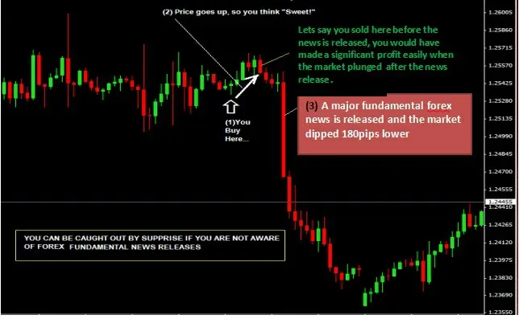
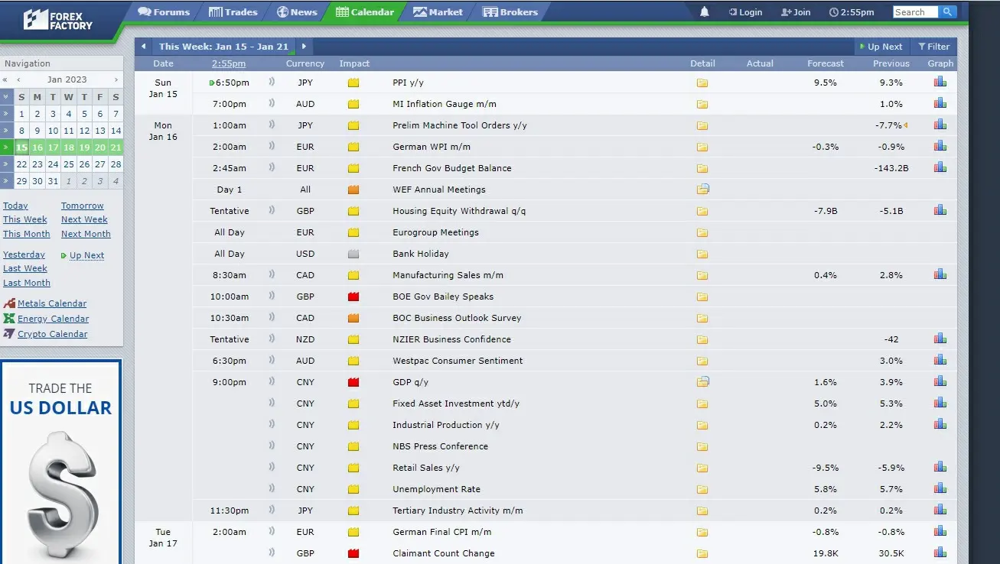
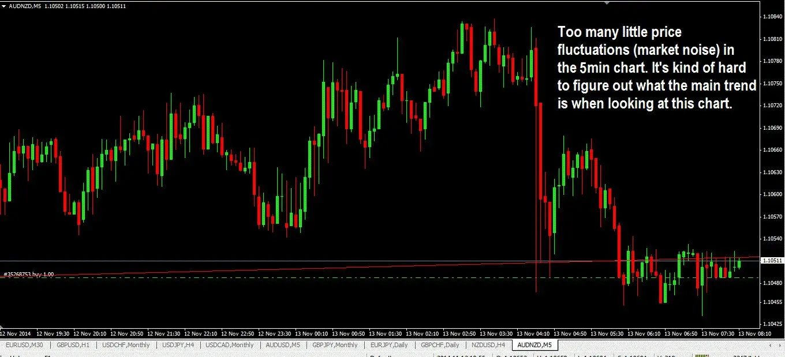
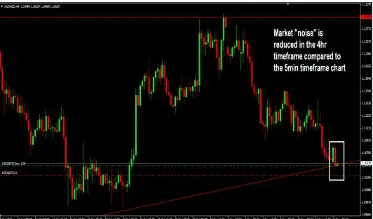

The simplest explanation of price movement trading is as follows:
The direction in which the market is most likely to travel is revealed to traders when they base their trading
decisions on recurring price patterns that have already formed.
Chart patterns, candlestick patterns, trendlines, price bands, market swing structure including upswings and
downswings, support and resistance levels, consolidations, Fibonacci retracement levels, pivots, etc. are some of the
instruments used in price action trading.
Typically, price action traders overlook fundamental analysis, the underlying force behind market movement. Why?
They think that everything has already been lowered to the market price.
However, there is one item I think you shouldn't disregard: important economic news announcements like the
FOMC meeting, non-farm payroll, and interest rate decisions.
The publication of economic news can be both a friend and an enemy for your trades, in my experience and from
what I've witnessed.
What I mean by it is this:
● Because the release of the news frequently has a tendency to alter price very fast either up or down due to
heightened volatility, if you did take a trade in line with the outcome of an economic news release you stand to
gain a lot more money very quickly in a very short time.
● However, if you made a trade in the opposite direction of the news, you risk having all of your profits erased or
suffering a significant loss because the markets may move so quickly at that time that it may not be possible for
your stop loss to be activated.
The picture chart below provides an illustration of what can occur in the event of a significant forex news release:

I'll always remember this event. The trade I made on a beautiful price action setup proceeded just as I had expected,
but a few minutes later, the market abruptly declined.
At the first price level I set, my stop loss was never activated.
The price was well below where my stop loss price was, therefore despite my best efforts, I was unable to close that
transaction. Price penetrated my stop loss.
Helpless, I did nothing but stand there and observe. The trade was finally closed by the broker after what seemed
like an age, and at the absolute worst price down below!
My trading account was virtually destroyed by that single trade. I lost approximately half of my trading account
instead of just 2% of it. What occurred that evening to cause the market to move in such a manner eluded me and I
was unaware of it. That night, I was unable to sleep.
Later, I discovered that the market movement was caused by a significant economic news announcement.
Currently, I use this website to examine the news calendar before placing a trade:
https://www.forexfactory.com/calendar
If there is a good trade setup, and I see that a big news announcement is about to happen, I will not enter. On rare
occasions, if I can position my stop loss behind a significant support or resistance level, I will enter a trade.
High impact news is denoted by the color red. You should search for this (see illustration below):

What you can do is this:
● If you have a good trade setup, check forexfactory.com to make sure no significant news announcements are about
to be made that could affect your trade.
● If there is news to be released, you have two options: either wait until after the news has been revealed before
trading again or, if you must trade, trade tiny contracts because the market is extremely volatile right after the news
has been released. You may benefit from this or not. During these times, you need to be aware of what you are
doing.
● If you already have a trade open that is profitable and has been running for a while (before the news is
announced), you might want to consider tightening your stop loss or taking some winnings off the table in case the
market turns against you once the news is released. The market price is currently much higher than when you
entered the trade, and in a perfect scenario, you would have already locked in some profits. If the market rises in
your favor following the announcement of the news, you will benefit greatly
Trading from a long timeframe rather than smaller timeframes is one of the best strategies to reduce market noise. To understand what I mean, look at the two charts below:

Now compare the 4 hour chart's market noise (see the white box on the chart? That corresponds to the region of the 5 minute chart above!)
Many traders lose their way while trading on lower timeframes because they do not realize that the huge trend in the
larger period is the one that actually determines what happens on the smaller timeframes. Smaller timeframes
frequently have too much noise. With that in mind, I do use trading setups that occur in larger periods while I trade in smaller timeframes. I do this in
order to enter at a lower price and maintain a close stop loss.
Multi-timeframe trading is what this is known as, and I'll go over it in Chapter 15 so you can understand how it's
done.
Can Price Action Be Used In Other Markets?
Yes, that is the answer. Everything here about price action trading is applicable to all markets.
I'll be focusing on exploiting price action in the currency market throughout this book, but as I've already said, the
ideas are general and can be used in any financial market.
Trading With An Edge Is Possible With Price Action Trading. Trading with an edge is the goal of price action
trading. Now you might be wondering what a trading is?
Simply expressed, this means that you should only trade when the chances are in your favor. Items like:
● Trading in line with the trend.
● Using Price Action in Trading utilizing trustworthy candlestick and chart
patterns.
● Trading with resistance and support levels.
● Increasing your winning trade relative to your lost trade
● Only trading in longer time spans
● Being patient and not chasing trades while waiting for the best trade
situations.
All of the aforementioned factors provide you a trading edge. Although you've certainly heard of these before and
they may not be particularly exciting, this is what differentiates winners from losers.
What Trading Price Action Is Not
Price Movement Trading Won't Make You Wealthy… However, using good risk management while trading
price action might help you become a successful trader. Some of you will read through this book, learn from it, and
succeed while others will fall short. That is simply how life is.
Price Action Trading May Not Be The Ultimate Strategy , but it sure beats relying on other indicators, the
majority of which are generated from price action and frequently lag anyhow.
"Price Action Trading Is Not a Get Rich Quick Scheme . You must work diligently, pay attention, and You will
be rewarded for watching how price responds and identifying those recurring patterns before having the courage to
trade them.
"Go forth and win," if you are one of those who will take the information from this book and apply it to your forex
trading.
Chart Period
To grasp price action, you require chart time. Some of you might need some time to fully grasp it, while others
might pick it up quite quickly.
Watch the market's price movement. Look back in time to observe how the market had operated. What made it act in
such manner? Until you accomplish this, you cannot trade price action with confidence.
You would have a significant advantage if you could simply read the charts well enough to be able to enter at the
precise times when the move would take off and not reverse.
My trading tools include trend lines, particular candlestick patterns, particular chart patterns, Fibonacci retracement
levels, and levels of support and resistance.
It won't take long for you to start comprehending and realizing how everything fits together if you put the time and
effort into learning them.
Learn how to trade pure price action now.